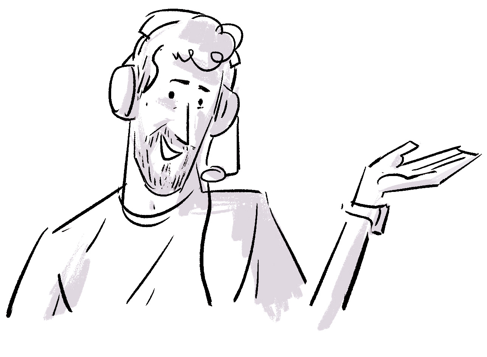
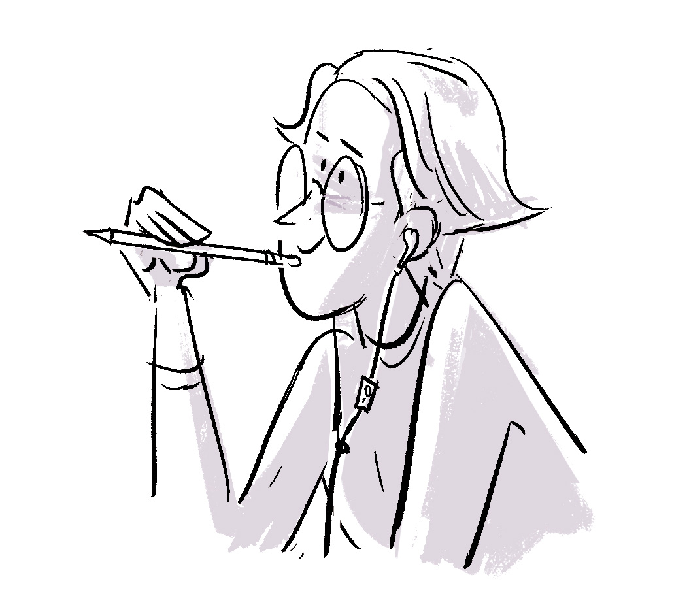

نویسندگان
ماتیاس کیرشنر
نویسنده

نمای نزدیک ماتیاس در حال لبخند، با هدست؛ موهای کوتاه و ریش کوتاه. (پایان توصیف)
ماتیاس از کودکی مجذوب رایانه و نرمافزار بود. با دسترسی زودهنگام به اینترنت چیزهای زیادی آموخت. باور دارد کودکان حق دارند آیندهشان را خودشان بسازند؛ از همین رو برای استفادهٔ مستقل از نرمافزار میکوشد و رئیس بنیاد نرمافزارهای آزاد اروپا (FSFE) است. آرزو دارد روزی اسکیتبورد برقی با نرمافزار آزاد بسازد.
ساندرا براندشتتر
تصویرگر

ساندرا لبخندزنان با مداد نزدیک چانه و هدفون. موهای کوتاه و عینک. (پایان توصیف)
ساندرا همیشه دوست داشت با قیچی، انبردست، چسب، سیم، پارچه و کاغذ بسازد. امروز تصویرگر، نویسندهٔ کمیک و طراح شخصیت برای انیمیشن است؛ از جمله سریال Trudes Tier در برنامهٔ آلمانی Die Sendung mit der Maus. در بستنیفروشی یک بستنی خامهای رنگینکمان با طعم لیمو–خیار و مروارید شکری انتخاب میکند.